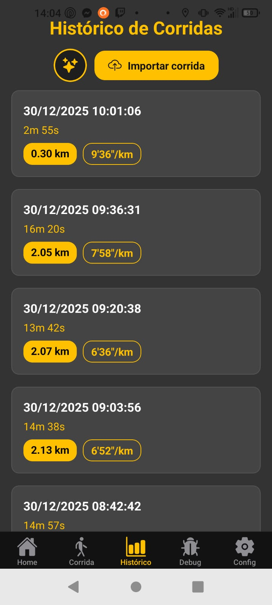

Manual de Instruções
Aprenda a configurar e extrair o máximo do RunTune.
1. Modos de Funcionamento
O RunTune se adapta à sua forma de treinar. Existem três maneiras principais de usar o aplicativo:
Links úteis para o Modo Standalone:
- Crie sua conta: Last.fm
- Como configurar o scrobbling: Guia de Configuração
2. Celular: Tela Principal

Interface Principal do RunTune no Celular
- Começar Corrida: Inicia o monitoramento do exercício imediatamente.
- Histórico: Acesso rápido a todas as suas atividades salvas.
- Preparar Música: Atalhos para abrir seus apps favoritos. Se um app (como o Amazon) não estiver instalado, o ícone não aparecerá.
- Navegação Inferior: Alterne rapidamente entre Home, Exercício, Histórico, Debug e Configurações.
2.2 Celular: Tela de Exercício
Interface de Monitoramento em Tempo Real
Esta é a central de controle da sua atividade. Veja como ela funciona:
- Card de Música: Assim que você iniciar a corrida e o som começar, um card dinâmico aparecerá mostrando a música atual. Ele atualiza em tempo real conforme as faixas mudam.
- Sincronização: Se você bloquear o celular durante o treino, os dados visuais serão atualizados instantaneamente assim que você desbloquear a tela.
- Anúncios de Voz: O RunTune anunciará seu progresso automaticamente a cada 1 km percorrido e fornecerá um resumo completo ao encerrar.
Dica: Você pode desativar esses anúncios na tela de Configurações. - Finalizar: Basta clicar no botão Parar para encerrar o rastreamento e salvar a atividade no histórico.
2.3 Celular: Tela de Histórico
Gestão de Atividades e Inteligência Musical
Aqui você encontra todos os seus registros passados e ferramentas avançadas de organização:
- Lista de Exercícios: Exibe a data, tempo total, distância e o ritmo médio (pace) de cada atividade. Toque em qualquer cartão para abrir a Tela de Detalhes.
- ✨ Setlist Inteligente (Ícone de Estrelas): Esta funcionalidade exclusiva analisa suas músicas e performance.
Nota: Esta opção é habilitada automaticamente após você completar pelo menos 3 exercícios. - ☁️ Importar Corrida: Permite restaurar atividades de outros dispositivos. Você pode carregar arquivos que foram salvos anteriormente através da função "Exportar Dados" na tela de detalhes.
2.4 Celular: Tela de Debug & Logs
Ferramentas de Diagnóstico Técnico
Esta tela é destinada à identificação e resolução de eventuais problemas técnicos ou comportamentos incorretos do aplicativo:
- Saúde do Sistema: Monitora em tempo real a conexão com o Spotify, o status do Wearable (relógio) e a captura de notificações de música.
- Últimos Logs: Exibe as atividades internas recentes do app, como tentativas de sincronização com o Last.fm ou erros de GPS.
- Exportar Logs: Permite gerar um arquivo de texto com todo o histórico técnico. Você pode compartilhar este arquivo via WhatsApp ou E-mail para facilitar o suporte técnico ou analisar os dados em um computador.
- Limpar Logs: Apaga os registros atuais para liberar espaço ou iniciar uma nova análise do zero.
2.5 Celular: Configurações
Personalização e Ajustes de Conta
Personalize sua experiência e configure as integrações necessárias para o funcionamento pleno do app:
- Feedback durante o exercício:
- Verbalização por KM: Ative para que o app fale seu progresso a cada quilômetro e forneça um resumo por voz ao finalizar.
- Vibração por KM: Receba um alerta tátil no pulso ou no bolso a cada quilômetro completado.
- Integração Last.fm: Fundamental para quem utiliza o **Relógio Standalone**. Conecte sua conta para recuperar o histórico de músicas do Spotify ou Deezer quando você corre sem o celular.
- Política e Legal: Acesso direto a este Manual (Como Usar), à Política de Privacidade e ao canal de Suporte para dúvidas e contato.
- Sobre o App: Verifique a versão atual do seu RunTune para garantir que você está com os recursos mais recentes.
2.6 Celular: Detalhes do Exercício
Ao abrir uma corrida salva, você acessa uma análise profunda dividida em quatro áreas principais:
- Resumo: Trajeto completo no mapa e dados gerais (distância, tempo, pace).
- Setlist: Lista detalhada de todas as músicas que tocaram.
- Voltas: Relaciona sua performance (ritmo) diretamente com as músicas de cada trecho.
- ✨ Mapa Musical: O grande diferencial. Visualização do trajeto onde cada cor representa uma música. Trechos com melhor performance ganham destaque visual.
Ferramentas de Exportação (Ícones Superiores)
2.7 Celular: Smart Setlist (Setlist Inteligente)
O Smart Setlist utiliza inteligência de dados para cruzar sua performance física com seu histórico musical, criando a trilha sonora ideal para seus objetivos.
Você define a distância planejada e o tempo desejado. O aplicativo analisa quais músicas costumam te dar mais energia (melhor pace) e gera uma setlist personalizada para te ajudar a manter o ritmo necessário.
- Avaliação de Viabilidade: O RunTune avalia se a meta inserida é humanamente possível. Caso o objetivo seja considerado impossível de atingir, o aplicativo não gerará a lista para garantir a segurança e o foco real do treino.
- Destaque de Performance: A tela mostra quais músicas estão no seu "Top Performance", aquelas que tocaram nos seus melhores quilômetros.
- Exportação: Assim como na tela de detalhes, você pode exportar esta seleção em formatos M3U ou CSV para usar em seu player favorito através de apps de terceiros.
3.1 Relógio: Tela Principal e Seleção
Interface do RunTune para Wear OS
A experiência no relógio foi desenhada para ser rápida e independente. Confira as opções disponíveis:
- Tipo de Exercício: Você pode escolher entre diferentes modalidades.
Nota: A opção de Esteira ainda está em fase de refinamento e pode apresentar variações na precisão. - Seleção de Player: Escolha qual aplicativo de música você pretende usar durante o treino.
- Histórico: Atalho rápido para visualizar as atividades sincronizadas com o celular.
Para correr apenas com o relógio (sem o celular), a identificação das músicas funciona exclusivamente para:
- Spotify: Contas Free ou Premium.
- Deezer: Apenas contas Premium.
- Requisito: É obrigatório ter a conta Last.fm configurada e o scrobbling ativo em ambos os dispositivos.
3.2 Relógio: Configurações
Ajustes de Acessibilidade e Parâmetros de Treino
Nesta tela, você ajusta o comportamento do RunTune diretamente no seu pulso:
- Narração de Progresso: Ative esta opção para que o relógio narre seu desempenho (como distância e tempo) durante o exercício.
- Conta Last.fm: Campo para inserir o usuário associado ao Last.fm.
Lembrete: Isso é essencial para que o relógio identifique suas músicas no modo Standalone. - Tamanho da Passada (Esteira): Permite definir o comprimento do seu passo para melhorar a precisão em exercícios internos.
Nota: Esta funcionalidade ainda está em fase de implementação e refinamento.
3.3 Relógio: Histórico e Recuperação
Gestão de Sincronização e Salvamento de Emergência
O histórico no relógio permite gerenciar seus treinos recentes e garante que você não perca dados em imprevistos:
- Sincronização: Você pode optar por reenviar todas as corridas pendentes para o celular de uma vez, ou gerenciar cada uma individualmente (reenviar ou apagar).
- 🛡️ Recuperação de Exercícios (Parciais): Caso o relógio apresente problemas durante o treino — como superaquecimento ou fim da bateria — o RunTune salva o progresso até aquele momento.
Ao abrir o app novamente, você pode localizar o exercício na lista de "Parciais" e concluí-lo manualmente, evitando a perda total do seu registro.
3.4 Relógio: Tela de Exercício
Interface de Monitoramento Ativo no Pulso
Durante o treino, o relógio exibe suas métricas mais importantes de forma clara e acessível:
- Destaque Principal: O tempo de exercício é sempre a métrica central e de maior visibilidade.
- ✨ Destaque Secundário Customizável: Você pode escolher qual informação quer ver em destaque logo abaixo do tempo.
Como mudar: Basta tocar diretamente na métrica que deseja destacar (Distância, Pace ou Velocidade Média) e ela assumirá o posto de destaque secundário automaticamente. - Interface Adaptativa: O design foi pensado para facilitar a leitura mesmo em movimento, permitindo que você alterne o foco da sua performance com apenas um toque na tela.
3.5 Relógio: Resumo do Exercício
Conclusão e Estatísticas Finais
Ao finalizar sua corrida, o relógio apresenta um resumo consolidado da sua performance antes de enviar os dados para o celular:
- Visão Geral: Confira rapidamente sua distância total, tempo de atividade e ritmo médio (pace).
- Feedback por Voz: Se habilitado nas configurações, o relógio fará a leitura em áudio deste resumo para você.
- Sincronização Automática: Assim que você visualiza o resumo e fecha a tela, o RunTune tenta enviar a corrida para o histórico do seu celular via Bluetooth/Wi-Fi.
User Manual
Learn how to configure and get the most out of RunTune.
1. Operating Modes
RunTune adapts to your training style. There are three main ways to use the app:
Useful links for Standalone Mode:
- Create your account: Last.fm
- How to configure scrobbling: Setup Guide
2. Phone: Main Screen
RunTune Main Interface on Phone
- Start Run: Starts tracking immediately.
- History: Quick access to all your saved activities.
- Music Prep: Shortcuts to open your favorite apps. If an app (like Amazon) isn't installed, its icon won't appear.
- Bottom Navigation: Quickly switch between Home, Exercise, History, Debug, and Settings.
2.2 Phone: Exercise Screen
Real-Time Monitoring Interface
This is your activity control center. Here's how it works:
- Music Card: As soon as you start the run and music begins, a dynamic card will appear showing the current track. It updates in real-time as songs change.
- Sync: If you lock your phone during the workout, visual data will update instantly when you unlock the screen.
- Voice Announcements: RunTune will automatically announce your progress every 1 km and provide a complete summary when you finish.
Tip: You can disable these announcements in Settings. - Finish: Simply click the Stop button to end tracking and save the activity to history.
2.3 Phone: History Screen
Activity Management and Music Intelligence
Here you'll find all your past records and advanced organization tools:
- Exercise List: Displays date, total time, distance, and average pace for each activity. Tap any card to open the Details Screen.
- ✨ Smart Setlist (Star Icon): This exclusive feature analyzes your music and performance.
Note: This option is automatically enabled after you complete at least 3 workouts. - ☁️ Import Run: Allows you to restore activities from other devices. You can load files that were previously saved through the "Export Data" function in the details screen.
2.4 Phone: Debug & Logs Screen
Technical Diagnostic Tools
This screen is for identifying and resolving potential technical issues or incorrect app behavior:
- System Health: Monitors in real-time the Spotify connection, Wearable (watch) status, and music notification capture.
- Recent Logs: Displays recent internal app activities, such as Last.fm sync attempts or GPS errors.
- Export Logs: Allows generating a text file with the complete technical history. You can share this file via WhatsApp or Email for technical support or analysis on a computer.
- Clear Logs: Deletes current records to free up space or start a new analysis from scratch.
2.5 Phone: Settings
Customization and Account Settings
Personalize your experience and configure integrations needed for full app functionality:
- Workout Feedback:
- Voice per KM: Enable so the app speaks your progress every kilometer and provides a voice summary when finishing.
- Vibration per KM: Receive a tactile alert on your wrist or pocket every kilometer completed.
- Last.fm Integration: Essential for those using **Standalone Watch**. Connect your account to retrieve music history from Spotify or Deezer when running without your phone.
- Policy and Legal: Direct access to this Manual (How to Use), Privacy Policy, and Support channel for questions and contact.
- About App: Check the current version of your RunTune to ensure you have the latest features.
2.6 Phone: Exercise Details
When opening a saved run, you access deep analysis divided into four main areas:
- Summary: Complete route on map and general data (distance, time, pace).
- Setlist: Detailed list of all songs that played.
- Laps: Correlates your performance (pace) directly with the music from each segment.
- ✨ Musical Map: The main differentiator. Route visualization where each color represents a song. Segments with better performance get visual highlights.
Export Tools (Top Icons)
2.7 Phone: Smart Setlist
Smart Setlist uses data intelligence to cross your physical performance with your music history, creating the ideal soundtrack for your goals.
You define the planned distance and desired time. The app analyzes which songs tend to give you more energy (better pace) and generates a personalized setlist to help you maintain the necessary rhythm.
- Feasibility Assessment: RunTune evaluates if the entered goal is humanly possible. If the objective is considered impossible to achieve, the app won't generate the list to ensure safety and real training focus.
- Performance Highlights: The screen shows which songs are in your "Top Performance", those that played during your best kilometers.
- Export: Just like in the details screen, you can export this selection in M3U or CSV formats to use in your favorite player through third-party apps.
3.1 Watch: Main Screen & Selection
RunTune Interface for Wear OS
The watch experience was designed to be fast and independent. Check out the available options:
- Exercise Type: You can choose between different modes.
Note: The Treadmill option is still being refined and may show accuracy variations. - Player Selection: Choose which music app you plan to use during the workout.
- History: Quick shortcut to view activities synced with your phone.
To run with only the watch (without phone), music identification works exclusively for:
- Spotify: Free or Premium accounts.
- Deezer: Premium accounts only.
- Requirement: You must have a Last.fm account configured and scrobbling active on both devices.
3.2 Watch: Settings
Accessibility Settings and Training Parameters
On this screen, you adjust RunTune's behavior directly on your wrist:
- Progress Narration: Enable this option so the watch narrates your performance (like distance and time) during the workout.
- Last.fm Account: Field to enter your Last.fm username.
Reminder: This is essential for the watch to identify your music in Standalone mode. - Stride Length (Treadmill): Allows setting your step length to improve accuracy in indoor workouts.
Note: This functionality is still in implementation and refinement phase.
3.3 Watch: History & Recovery
Sync Management and Emergency Backup
The watch history allows managing your recent workouts and ensures you don't lose data in unexpected situations:
- Sync: You can choose to resend all pending runs to your phone at once, or manage each one individually (resend or delete).
- 🛡️ Exercise Recovery (Partial): If the watch has problems during the workout — like overheating or battery drain — RunTune saves progress up to that point.
When reopening the app, you can find the workout in the "Partial" list and finish it manually, avoiding total loss of your record.
3.4 Watch: Workout Screen
Active Monitoring Interface on Your Wrist
During the workout, the watch displays your most important metrics clearly and accessibly:
- Primary Highlight: Exercise time is always the central and most visible metric.
- ✨ Customizable Secondary Highlight: You can choose which information you want highlighted right below the time.
How to change: Just tap directly on the metric you want to highlight (Distance, Pace, or Average Speed) and it will automatically take the secondary highlight position. - Adaptive Interface: The design was created to facilitate reading even while moving, allowing you to switch your performance focus with just a tap on the screen.
3.5 Watch: Workout Summary
Conclusion and Final Statistics
When finishing your run, the watch presents a consolidated summary of your performance before sending data to your phone:
- Overview: Quickly check your total distance, activity time, and average pace.
- Voice Feedback: If enabled in settings, the watch will read this summary aloud for you.
- Auto-Sync: Once you view the summary and close the screen, RunTune attempts to send the run to your phone's history via Bluetooth/Wi-Fi.
Manual de Instrucciones
Aprende a configurar y sacar el máximo provecho de RunTune.
1. Modos de Funcionamiento
RunTune se adapta a tu forma de entrenar. Existen tres formas principales de usar la aplicación:
Enlaces útiles para el Modo Standalone:
- Crea tu cuenta: Last.fm
- Cómo configurar el scrobbling: Guía de Configuración
2. Celular: Pantalla Principal
Interfaz Principal de RunTune en el Celular
- Comenzar Carrera: Inicia el monitoreo del ejercicio inmediatamente.
- Historial: Acceso rápido a todas tus actividades guardadas.
- Preparar Música: Atajos para abrir tus apps favoritas. Si una app (como Amazon) no está instalada, el ícono no aparecerá.
- Navegación Inferior: Alterna rápidamente entre Home, Ejercicio, Historial, Debug y Configuración.
2.2 Celular: Pantalla de Ejercicio
Interfaz de Monitoreo en Tiempo Real
Esta es la central de control de tu actividad. Así es como funciona:
- Card de Música: Tan pronto inicies la carrera y comience el sonido, aparecerá una tarjeta dinámica mostrando la música actual. Se actualiza en tiempo real conforme cambian las pistas.
- Sincronización: Si bloqueas el celular durante el entrenamiento, los datos visuales se actualizarán instantáneamente cuando desbloquees la pantalla.
- Anuncios de Voz: RunTune anunciará tu progreso automáticamente cada 1 km recorrido y proporcionará un resumen completo al terminar.
Consejo: Puedes desactivar estos anuncios en la pantalla de Configuración. - Finalizar: Simplemente haz clic en el botón Parar para terminar el seguimiento y guardar la actividad en el historial.
2.3 Celular: Pantalla de Historial
Gestión de Actividades e Inteligencia Musical
Aquí encuentras todos tus registros pasados y herramientas avanzadas de organización:
- Lista de Ejercicios: Muestra la fecha, tiempo total, distancia y el ritmo medio (pace) de cada actividad. Toca cualquier tarjeta para abrir la Pantalla de Detalles.
- ✨ Setlist Inteligente (Ícono de Estrellas): Esta funcionalidad exclusiva analiza tus músicas y rendimiento.
Nota: Esta opción se habilita automáticamente después de completar al menos 3 ejercicios. - ☁️ Importar Carrera: Permite restaurar actividades de otros dispositivos. Puedes cargar archivos que fueron guardados previamente a través de la función "Exportar Datos" en la pantalla de detalles.
2.4 Celular: Pantalla de Debug & Logs
Herramientas de Diagnóstico Técnico
Esta pantalla está destinada a la identificación y resolución de eventuales problemas técnicos o comportamientos incorrectos de la aplicación:
- Salud del Sistema: Monitorea en tiempo real la conexión con Spotify, el estado del Wearable (reloj) y la captura de notificaciones de música.
- Últimos Logs: Muestra las actividades internas recientes de la app, como intentos de sincronización con Last.fm o errores de GPS.
- Exportar Logs: Permite generar un archivo de texto con todo el historial técnico. Puedes compartir este archivo vía WhatsApp o Email para facilitar el soporte técnico o analizar los datos en una computadora.
- Limpiar Logs: Borra los registros actuales para liberar espacio o iniciar un nuevo análisis desde cero.
2.5 Celular: Configuración
Personalización y Ajustes de Cuenta
Personaliza tu experiencia y configura las integraciones necesarias para el funcionamiento completo de la app:
- Feedback durante el ejercicio:
- Verbalización por KM: Activa para que la app hable tu progreso cada kilómetro y proporcione un resumen por voz al finalizar.
- Vibración por KM: Recibe una alerta táctil en la muñeca o en el bolsillo cada kilómetro completado.
- Integración Last.fm: Fundamental para quienes utilizan el **Reloj Standalone**. Conecta tu cuenta para recuperar el historial de músicas de Spotify o Deezer cuando corres sin el celular.
- Política y Legal: Acceso directo a este Manual (Cómo Usar), a la Política de Privacidad y al canal de Soporte para dudas y contacto.
- Acerca de la App: Verifica la versión actual de tu RunTune para garantizar que tienes los recursos más recientes.
2.6 Celular: Detalles del Ejercicio
Al abrir una carrera guardada, accedes a un análisis profundo dividido en cuatro áreas principales:
- Resumen: Trayecto completo en el mapa y datos generales (distancia, tiempo, pace).
- Setlist: Lista detallada de todas las músicas que sonaron.
- Vueltas: Relaciona tu rendimiento (ritmo) directamente con las músicas de cada tramo.
- ✨ Mapa Musical: El gran diferencial. Visualización del trayecto donde cada color representa una música. Tramos con mejor rendimiento ganan destaque visual.
Herramientas de Exportación (Íconos Superiores)
2.7 Celular: Smart Setlist (Lista Inteligente)
El Smart Setlist utiliza inteligencia de datos para cruzar tu rendimiento físico con tu historial musical, creando la banda sonora ideal para tus objetivos.
Defines la distancia planificada y el tiempo deseado. La aplicación analiza qué músicas suelen darte más energía (mejor pace) y genera una setlist personalizada para ayudarte a mantener el ritmo necesario.
- Evaluación de Viabilidad: RunTune evalúa si la meta ingresada es humanamente posible. Si el objetivo se considera imposible de alcanzar, la aplicación no generará la lista para garantizar la seguridad y el foco real del entrenamiento.
- Destaque de Rendimiento: La pantalla muestra qué músicas están en tu "Top Performance", aquellas que sonaron en tus mejores kilómetros.
- Exportación: Así como en la pantalla de detalles, puedes exportar esta selección en formatos M3U o CSV para usar en tu player favorito a través de apps de terceros.
3.1 Reloj: Pantalla Principal y Selección
Interfaz de RunTune para Wear OS
La experiencia en el reloj fue diseñada para ser rápida e independiente. Revisa las opciones disponibles:
- Tipo de Ejercicio: Puedes elegir entre diferentes modalidades.
Nota: La opción de Cinta de correr todavía está en fase de refinamiento y puede presentar variaciones en la precisión. - Selección de Player: Elige qué aplicación de música pretendes usar durante el entrenamiento.
- Historial: Atajo rápido para visualizar las actividades sincronizadas con el celular.
Para correr solo con el reloj (sin el celular), la identificación de las músicas funciona exclusivamente para:
- Spotify: Cuentas Free o Premium.
- Deezer: Solo cuentas Premium.
- Requisito: Es obligatorio tener la cuenta Last.fm configurada y el scrobbling activo en ambos dispositivos.
3.2 Reloj: Configuración
Ajustes de Accesibilidad y Parámetros de Entrenamiento
En esta pantalla, ajustas el comportamiento de RunTune directamente en tu muñeca:
- Narración de Progreso: Activa esta opción para que el reloj narre tu desempeño (como distancia y tiempo) durante el ejercicio.
- Cuenta Last.fm: Campo para ingresar el usuario asociado a Last.fm.
Recordatorio: Esto es esencial para que el reloj identifique tus músicas en modo Standalone. - Tamaño de Zancada (Cinta): Permite definir la longitud de tu paso para mejorar la precisión en ejercicios internos.
Nota: Esta funcionalidad todavía está en fase de implementación y refinamiento.
3.3 Reloj: Historial y Recuperación
Gestión de Sincronización y Guardado de Emergencia
El historial en el reloj permite gestionar tus entrenamientos recientes y garantiza que no pierdas datos en imprevistos:
- Sincronización: Puedes optar por reenviar todas las carreras pendientes al celular de una vez, o gestionar cada una individualmente (reenviar o borrar).
- 🛡️ Recuperación de Ejercicios (Parciales): Si el reloj presenta problemas durante el entrenamiento — como sobrecalentamiento o fin de batería — RunTune guarda el progreso hasta ese momento.
Al abrir la app nuevamente, puedes localizar el ejercicio en la lista de "Parciales" y finalizarlo manualmente, evitando la pérdida total de tu registro.
3.4 Reloj: Pantalla de Ejercicio
Interfaz de Monitoreo Activo en la Muñeca
Durante el entrenamiento, el reloj muestra tus métricas más importantes de forma clara y accesible:
- Destaque Principal: El tiempo de ejercicio es siempre la métrica central y de mayor visibilidad.
- ✨ Destaque Secundario Personalizable: Puedes elegir qué información quieres ver destacada justo debajo del tiempo.
Cómo cambiar: Basta tocar directamente la métrica que deseas destacar (Distancia, Pace o Velocidad Media) y asumirá el puesto de destaque secundario automáticamente. - Interfaz Adaptativa: El diseño fue pensado para facilitar la lectura incluso en movimiento, permitiendo que alternes el foco de tu rendimiento con solo un toque en la pantalla.
3.5 Reloj: Resumen del Ejercicio
Conclusión y Estadísticas Finales
Al finalizar tu carrera, el reloj presenta un resumen consolidado de tu rendimiento antes de enviar los datos al celular:
- Visión General: Verifica rápidamente tu distancia total, tiempo de actividad y ritmo medio (pace).
- Feedback por Voz: Si está habilitado en la configuración, el reloj hará la lectura en audio de este resumen para ti.
- Sincronización Automática: Tan pronto visualizas el resumen y cierras la pantalla, RunTune intenta enviar la carrera al historial de tu celular vía Bluetooth/Wi-Fi.